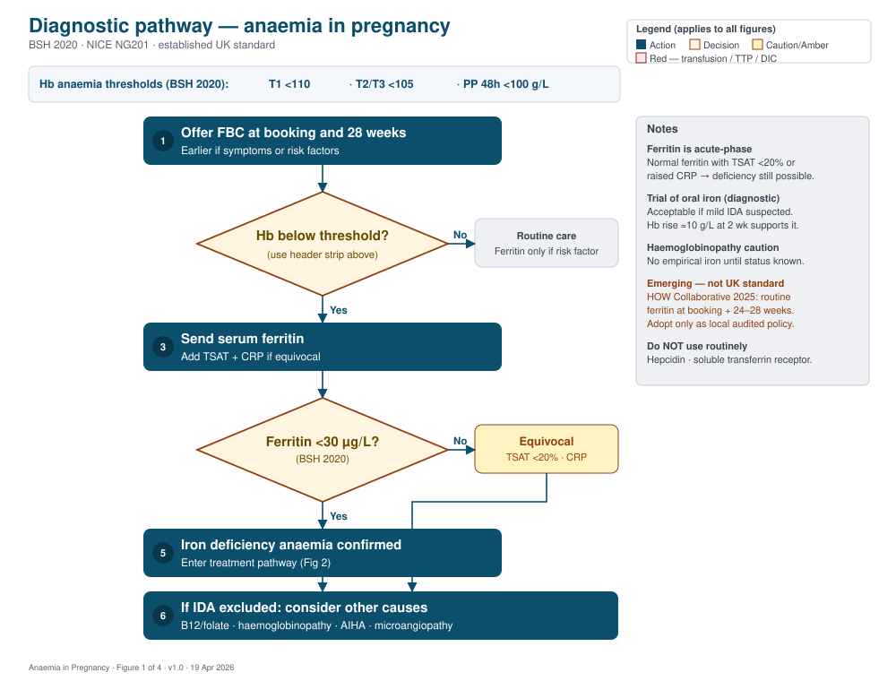
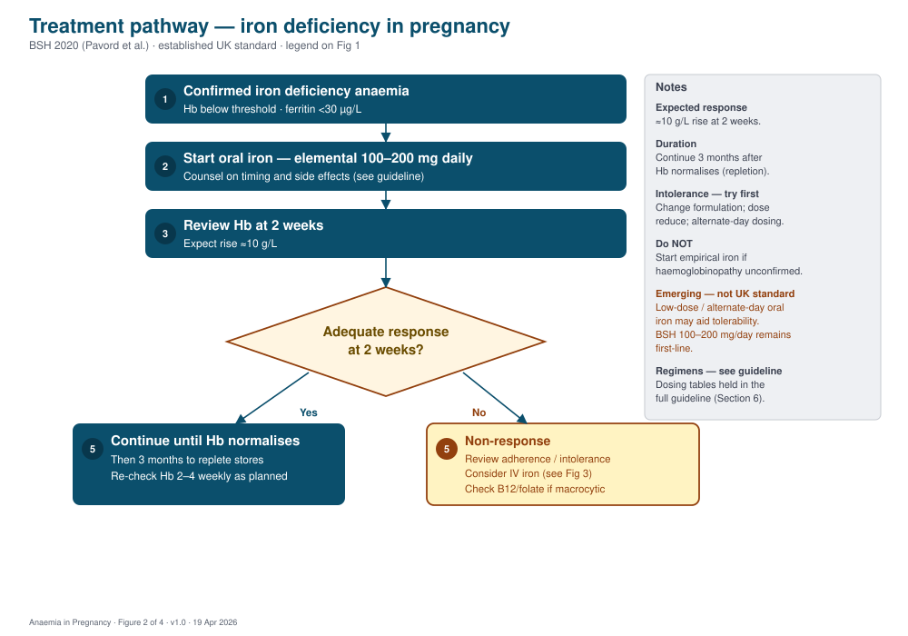
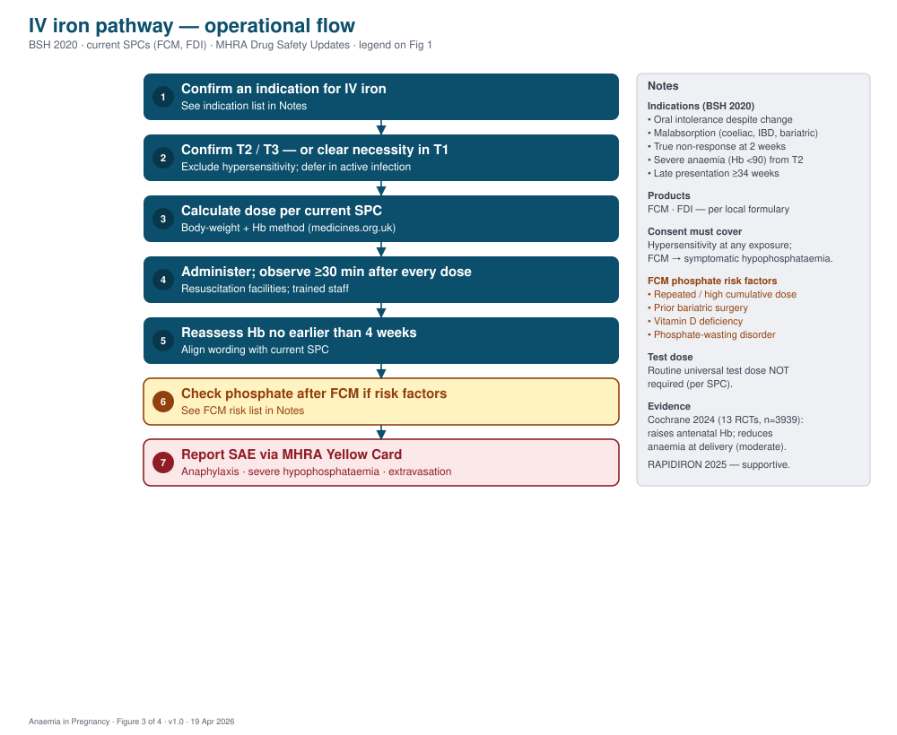
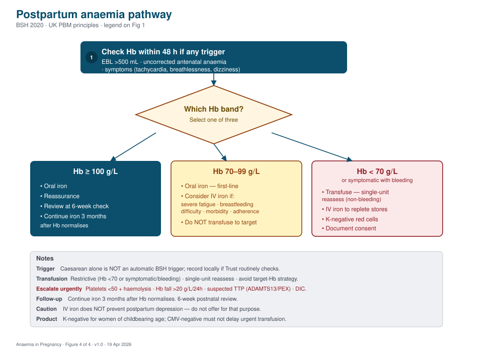

Scope and positioning
This guideline applies to pregnant and postpartum women cared for in UK NHS maternity services. It covers diagnosis of iron deficiency anaemia, oral iron, IV iron, postpartum anaemia, and transfusion decisions. It does not cover sickle cell disease, transfusion-dependent thalassaemia, or acquired thrombotic microangiopathy except where these intersect the anaemia pathway.
Every recommendation is tagged with an evidence tier:
- Established UK standard — written into a current UK national guideline (BSH, NICE, RCOG) or statutory (MHRA, SPC, NHS SCT).
- Specialist consensus — pragmatic UK practice without a direct RCT.
- Good-practice statement — consensus-based; no direct trial evidence.
- Emerging optimisation — new evidence that may revise practice; not yet UK standard.
Key thresholds
- Mid-T2 dilutional trough is physiological — do not over-treat.
- Ferritin is an acute-phase reactant. Where CRP is raised, or microcytic indices are present with normal ferritin, add TSAT. TSAT <20% supports deficiency.
- MCV rises ≈6 fL physiologically. True macrocytosis warrants B12 and folate testing.
- Hepcidin and soluble transferrin receptor are not routine in UK practice.
Screening
Routine FBC at booking and at 28 weeks is established UK standard (NICE NG201; BSH 2020). Repeat earlier where symptoms or risk factors are present.
Ferritin is not recommended as unselected routine screening (BSH 2020). Send ferritin when any of the following applies:
- Anaemia (Hb below the trimester threshold).
- Prior iron deficiency.
- Heavy menstrual bleeding before pregnancy.
- Known malabsorption (coeliac, IBD) or prior bariatric surgery.
- Vegan or strict vegetarian diet.
- Short inter-pregnancy interval or multiple pregnancy.
Diagnostic pathway
Step 1: FBC at booking and 28 weeks. Step 2: if Hb is below the trimester threshold, send ferritin (with TSAT and CRP where equivocal). Step 3: ferritin <30 µg/L confirms iron deficiency — enter the treatment pathway. Step 4: if equivocal, interpret TSAT and CRP together. Step 5: if iron deficiency is excluded, consider B12 / folate deficiency, haemoglobinopathy (do not start empirical iron), AIHA, microangiopathy, or anaemia of chronic disease.

A trial of oral iron is acceptable as a diagnostic test when anaemia is mild and indices are suggestive. A Hb rise of approximately 10 g/L at 2 weeks supports iron deficiency.
Oral iron — first-line treatment
Elemental iron 100–200 mg daily (BSH 2020). Any one of the following regimens, taken 2–3 times daily:
| Product | Dose | Approx. elemental iron / day |
|---|---|---|
| Ferrous sulfate | 200 mg × 2–3 daily | 130–195 mg |
| Ferrous fumarate | 210 mg × 2–3 daily | 138–207 mg |
| Ferrous gluconate | 300 mg × 2–3 daily | 105–140 mg |
Counselling. Take on an empty stomach 30–60 minutes before a meal. Vitamin C (orange juice or 250 mg ascorbic acid) aids absorption. Avoid tea, coffee, calcium, and antacids at the same time. Warn about nausea, constipation, and black stools. Offer a stool softener for constipation.
Review. Recheck Hb at 2 weeks — expect a rise of approximately 10 g/L. After Hb normalises, continue for 3 months to replete stores.
Intolerance. Dose reduce, change formulation, or move to alternate-day dosing. Continue to review against the 2-week Hb target.
Treatment pathway
Confirmed IDA → start oral iron → review Hb at 2 weeks → response? Yes → continue until Hb normalises, then 3 months to replete. No → review adherence and intolerance; consider IV iron (see Section 7).

IV iron
Products: ferric carboxymaltose (FCM) or ferric derisomaltose (FDI) per local formulary. Confine to second and third trimesters unless clearly necessary.
Indications (BSH 2020):
- Oral iron intolerance despite a different formulation and dose.
- Malabsorption — coeliac disease, post-bariatric surgery, IBD.
- True non-response to adequate oral iron after 2 weeks with confirmed adherence.
- Severe anaemia (Hb <90 g/L) from second trimester.
- Late presentation at ≥34 weeks with insufficient time for oral response.
- Preference for fewer total doses in selected women.
Dose: body-weight and Hb-based method per the current SPC. Observe per-session and per-week maxima. Always check medicines.org.uk before prescribing.
- Resuscitation facilities and trained staff at all times.
- Observe for at least 30 minutes after every dose (MHRA Drug Safety Update). Routine universal test dose is not required.
- Avoid where there is a known iron hypersensitivity. Delay where feasible in active infection.
- Consent covers hypersensitivity risk at any exposure and, for FCM, symptomatic hypophosphataemia.
- Reassess Hb no earlier than 4 weeks after the final dose — align wording with the current SPC.
Phosphate monitoring after FCM if any of the following apply: repeated dosing or high cumulative dose, prior bariatric surgery, vitamin D deficiency, or a symptomatic phosphate-wasting disorder.
Report serious adverse events (anaphylaxis, severe hypophosphataemia, extravasation) through the MHRA Yellow Card scheme.

Postpartum anaemia
Check Hb within 48 hours if any of: estimated blood loss >500 mL · uncorrected antenatal anaemia · symptoms (tachycardia, breathlessness, dizziness, severe fatigue). Caesarean section alone is not an automatic BSH trigger — record as local policy if your Trust routinely checks.
| Hb band | Action |
|---|---|
| ≥ 100 g/L | Oral iron; reassurance; review at 6-week postnatal check. Continue iron 3 months after Hb normalises. |
| 70–99 g/L | Oral iron first-line. Consider IV iron where severe fatigue, established breastfeeding difficulty, marked morbidity, or poor anticipated oral adherence. Do not transfuse to a target. |
| < 70 g/L or symptomatic with bleeding/instability | Red cell transfusion (typically single-unit with reassessment) plus IV iron to replete stores. K-negative red cells; document consent. |

Transfusion — principles
- Restrictive threshold Hb <70 g/L, or symptomatic with bleeding / haemodynamic instability (NICE NG24; RCOG GTG47).
- Single-unit reassess in non-bleeding women; avoid target-Hb strategies when IV iron is feasible.
- ABO and RhD compatible; K-negative red cells for women of childbearing age (reduces anti-K alloimmunisation).
- CMV-negative for elective pregnancy transfusion where indicated and feasible without delay. CMV-negative must not delay urgent intrapartum or postpartum transfusion. Required for intrauterine and neonatal transfusion.
- Irradiated components per standard UK indications (congenital immunodeficiency, recent intrauterine transfusion recipient, HLA-matched products, post purine-analogue therapy).
- Document consent.
Urgent escalation — do not miss
- Platelet count <50 × 10⁹/L with haemolytic indices.
- Hb fall >20 g/L in 24 h without overt bleeding.
- Suspected TTP — send ADAMTS13 and prepare plasma exchange.
- Deranged DIC screen — activate the major haemorrhage pathway.
- Consider HELLP, aHUS, AIHA, acute fatty liver of pregnancy.
- Anaphylaxis after IV iron — resuscitate and report via Yellow Card.
Common mistakes in practice
- Starting empirical iron before excluding haemoglobinopathy.
- Interpreting ferritin alone during inflammation (CRP raised).
- Reassessing Hb before 4 weeks after IV iron.
- Skipping the 30-minute post-IV-iron observation.
- Transfusing to a target Hb when IV iron is feasible.
- Giving folate alone when B12 may also be deficient.
Audit indicators
| Indicator | Target |
|---|---|
| FBC at booking and at 28 weeks | ≥99% |
| Ferritin sent where indicated | ≥95% |
| Hb ≥100 g/L at delivery | Benchmark locally; improve year on year |
| Postpartum red cell transfusion rate (per 1000 deliveries) | Track |
| IV iron rate (per 1000 deliveries) | Balancing measure |
| Serious adverse events following IV iron | Report via MHRA Yellow Card |
A named pathway lead is recommended. The downloadable audit workbook contains an indicator sheet, data dictionary, thresholds quick-reference, and sample dashboard.
Sources
- Pavord S et al. UK guidelines on the management of iron deficiency in pregnancy. Br J Haematol 2020;188(6):819–830. doi:10.1111/bjh.16221
- Oteng-Ntim E et al. Management of sickle cell disease in pregnancy. Br J Haematol 2021;194(6):980–995. doi:10.1111/bjh.17671
- Shah FT et al. Conception and pregnancy in thalassaemia syndromes. Br J Haematol 2024;204(6):2194–2209. doi:10.1111/bjh.19362
- Bain BJ et al. Significant haemoglobinopathies: screening and diagnosis. Br J Haematol 2023;201(6):1047–1065. doi:10.1111/bjh.18794
- Fletcher A et al. Laboratory diagnosis of iron deficiency (excluding pregnancy). Br J Haematol 2022;196(3):523–529. doi:10.1111/bjh.17900
- NICE NG201 Antenatal care; NICE NG24 Blood transfusion.
- RCOG Green-top 47 Blood transfusion in obstetrics; RCOG Green-top 52 PPH.
- MBRRACE-UK Saving Lives, Improving Mothers' Care (2024, 2025).
- MHRA Drug Safety Updates (IV iron; ferric carboxymaltose hypophosphataemia).
- Specialist Pharmacy Service advice on B12 replacement in pregnancy.
- NHS Sickle Cell and Thalassaemia Screening Programme.
- Nicholson L et al. Cochrane 2024; CD016136. doi:10.1002/14651858.CD016136
- Derman RJ et al. RAPIDIRON. Am J Obstet Gynecol 2025;233(2):120.e1–120.e18.
- Churchill D et al. Oral iron treatment for anaemia in pregnancy. BMC Pregnancy Childbirth 2025;25(1):863.
- Bombač Tavčar L et al. 2023–2025 postpartum RCT and sub-studies (fatigue, hypophosphataemia).
- HOW Collaborative 2025 — emerging consensus on routine ferritin screening.
Versioning and disclaimer
Version 1.0 · First publication 19 April 2026. Planned annual review or sooner if BSH, NICE, RCOG, MHRA, or SPC wording changes.
This guideline supports clinical judgement; it does not replace it. It is intended for use within UK NHS maternity and haematology services. Check the SPC for each IV iron product before prescribing. For educational use. Not for clinical use until local Trust sign-off.